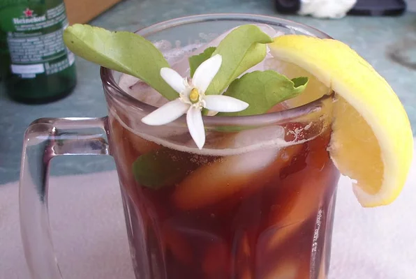

Simple Sweet Tea

This simple recipe is great for your entire family to enjoy.
This recipe is meant for the family on-the-go. It's simple yet sweet recipe means you can make a good amount with small downtime.
Ingredients
- 8 cups of water
- 4 extra-large tea bags
- 2 cups of cane sugar
Directions
- Bring water to a boil.
- Dissolve sugar in boiling water and remove from heat.
- Steep all 4 tea bags in water for five minutes.
- Remove tea bags, and refrigerate for one hour.
Return to main page